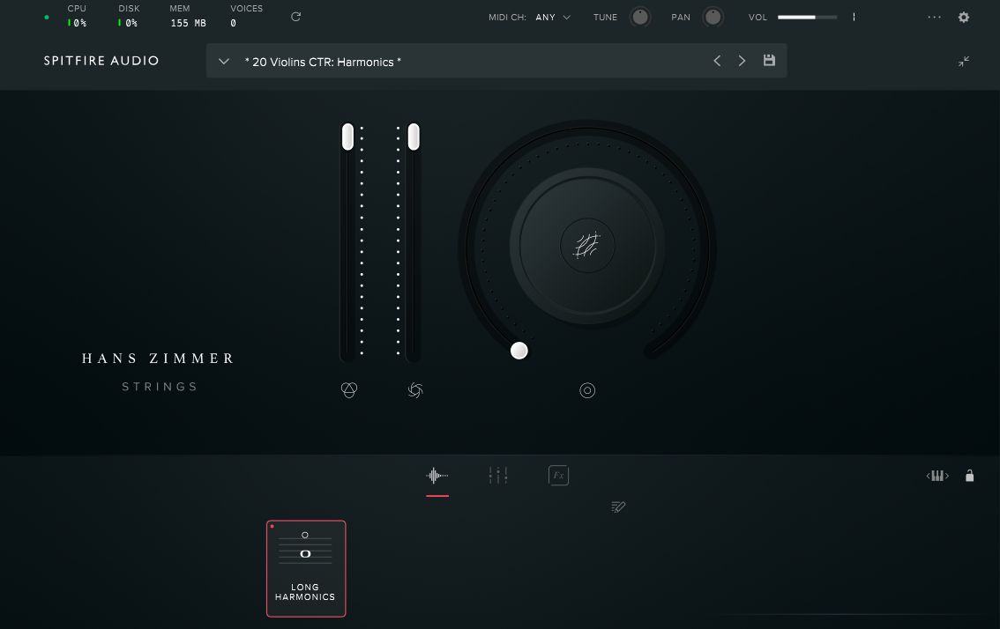

*** UNDER CONSTRUCTION ***
Randall Oelerich is a composer, artist, and writer based in Duluth, Minnesota USA
(Saint Louis County). He hikes in the local woods, creates music, markets a novel
he wrote under a pen name, and ponders where to travel for an adventure.
To learn more about Randall, click on a link(s) in the menu above.
